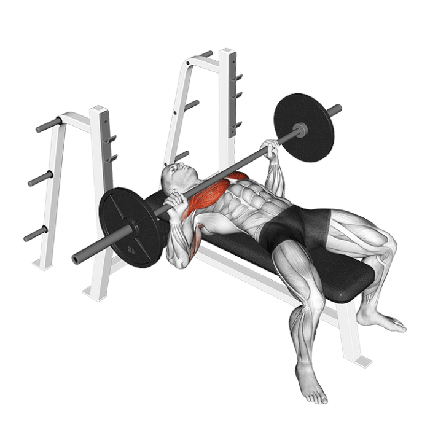
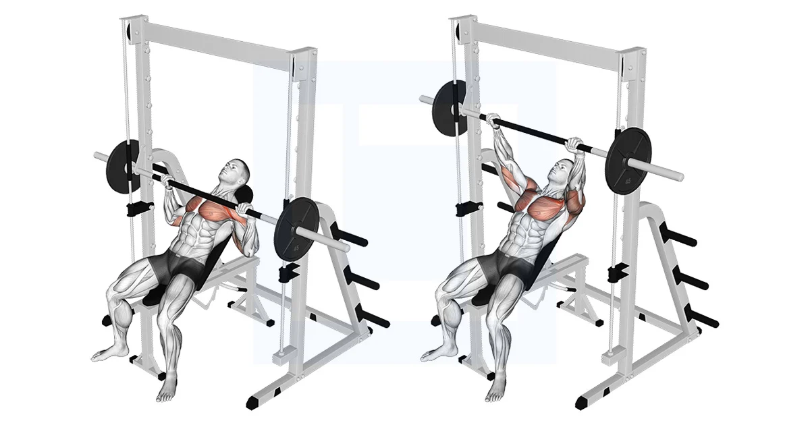
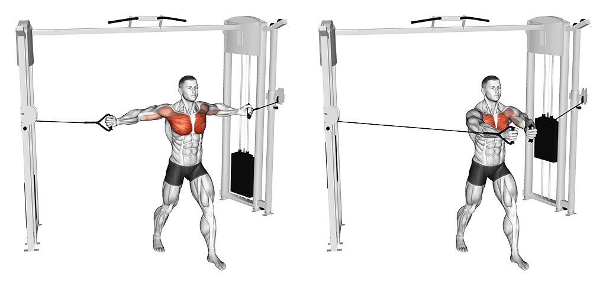
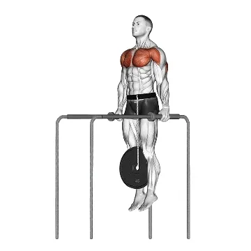

| 1 |
Développé couché haltères |
Forme classique de l'exercice, allongez-vous sur un banc plat muni de deux haltères. Placez les haltères droit devant vous, les bras tendus à la verticale. Descendez ensuite progressivement en contrôlant la charge avant de remonter vers votre position initiale.
|
- Répétitions : 10
- Poids : 50kg / bras
|
 |
| 2 |
Développé couché à la barre |
Allongé sur un banc, les pieds bien calés au sol, le bas du dos légèrement cambré, les mains espacées d’une largeur supérieure à celle des épaules, il s’agit de pousser la barre après que celle-ci soit arrivée au contact de vos pectoraux. |
- Répétitions : 6
- Poids : 115 kg
|
 |
| 3 |
Développé incliné à la smith machine |
Prendre la barre, mains en pronation, avec un écartement supérieur à celui des épaules. Inspirer et descendre lentement la barre jusqu'aux clavicules (haut des pectoraux) sans faire rebondir la barre sur la poitrine. Développer en inspirant à la fin du mouvement.
|
- Répétitions : 10
- Poids : 90 kg
|
 |
| 4 |
Écarté poulie haute |
Debout entre deux poulies hautes, les pieds bien stables (un devant, un derrière par exemple), une poignée dans chaque main, le buste penché à 135 degrés, il s'agit à partir d'une position bras écartés (coudes fléchis) de les ramener devant soi (dans l'axe des pectoraux). |
- Répétitions : 12
- Poids : 31.6 kg
|
 |
| Écarté poulie basse |
Saisissez les poignées avec une prise supination, les paumes vers le haut. Maintenez vos abdominaux contractés et penchez légèrement en avant. Amenez vos bras vers l'avant et légèrement vers le bas, en gardant une légère flexion des coudes.9
|
- Répétitions : 10
- Poids : 34.1 kg
|
| 6 |
Dips lesté |
Au départ du mouvement, l’athlète va inspirer, bloquer sa respiration, contracter la sangle abdominale et la région lombaire afin de venir fléchir les avant-bras sur les bras dans le but d’amener la poitrine au niveau des barres parallèles. Quand la poitrine arrive au niveau des barres parallèles, l’athlète redresse complètement son buste en terminant la répulsion de ses membres supérieurs jusqu’à revenir à la position initiale par une flexion de l’épaule et une extension des coudes.
|
- Répétitions : 10
- Poids : 40 kg
|
 |